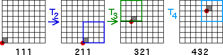

| For example, suppose we specify the resolution corresponding to addresses of length |
| To the specified resolution, |
| If T2 is the first transformation applied, then resulting point
|
| If T3 is the next transformation applied, then resulting point
|
| If T4 is the next transformation applied, then resulting point
|
| Continuing will fill in all the 43 regions of address length 3. |
|  |
Return to Same Picture.